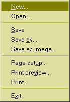
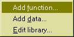
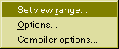

Welcome
Welcome to FPlot, a .NET programm for displaying mathematical functions and measurement data. Why yet another function plotting programm? The great advantage of FPlot is speed. Functions can be entered as C# sourcecode and compiled on the fly with the C#-compiler included in .NET. This way your functions evaluate at the full speed of any compiled .NET programm. There is no slow expression interpreter in between. Because of this, you can use complicated numerical algorithms in your functions, with only a moderate speed penalty to C/C++ or Fortran. If you use sophisticated numerical libraries there is almost no speed penalty compared to C code. Altough I don't know of any freeware .NET numerical library around there are some good comercial packages. You can use those libraries in your functions and can do complicated numerical calculations. Check out CenterSpace Softare or Visual Numerics for commercial numerical .NET libraries. As an addition to this, the main control that plots the functions and measurement data is located in a separate dll you can freely reuse in your own .NET programms. The documentation for this library is found in the directory where you installed FPlot in the help folder. This library comes with the complete sourcecode. You can freely modify this code and include it in your own programms. The source-code of the FPlot application is not yet available for free, because it uses some routines from Numerical Recipes and therefore cannot be published freely. Maybe in the future I will replace the Numerical Recipes routines with freeware ones, so the complete sourcecode of the FPlot package can be published.
Contents:
Menu Commands:
File menu
Edit menu
Options menu
Fit menu
Help menu
Mouse Commands on the plot view

New...
If you choose this menu entry, a dialogbox will appear that will prompt you for a filename of the new fplot-file you want to create. If you save the file later on, it will be saved with that filename.
Open...
Opens an fplot file. A File Chooser dialog will appear, where you can select the file you want to open.
Save
Saves the graph into a file with the name specified in the title-bar of the window.
Save as...
Saves the graph into a file. A dialogbox will appear where you can choose a filename.
Save as Image...
Opens a dialogbox where you can save the graph as an image.
Page setup...
Opens a page setup dialog, where you can set the page format and page margins for printing.
Print preview...
Opens a print preview dialog box.
Print...
Prints the graph to the printer.

Add Function...
Opens a dialogbox where you can edit a function.
Add Data...
Opens a dialogbox where you can edit measurement data.
Edit Library...
Opens a window where you can edit the library C# code.

Set view range...
Shows a dialogbox, where you can set the range of the plotted area.
Options...
Shows a dialogbox, where you can set drawing options for the graph.
Compiler Options...
Shows a dialogbox, where you can specify compiler options and libraries to import.
Fit...
This menu entry is only available if there is a fittable function and some measurement data present. A dialogbox is shown, where you can fit a function to measurement data.
Contents...
This page is displayed.